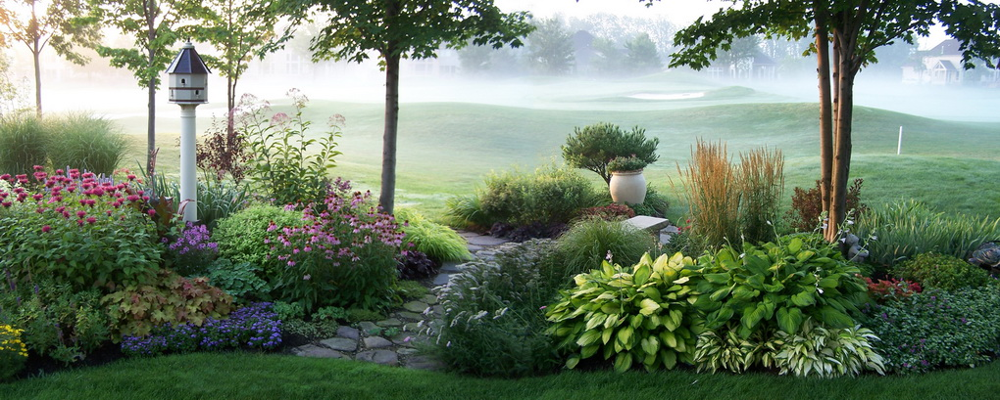

Багаторічні квіти ДЛЯ САДУ
Багаторічні квіти - ідеальні рослини для саду.
Вони не вимагають особливих турбот, довго ростуть на одному місці, декоративні протягом багатьох років. Посадивши їх один раз, не витрачаючи практично ніяких зусиль на догляд за ними, протягом декількох років можна насолоджуватися красою.
Всі садові квіти поділяються на дві великі групи: однорічні та багаторічні. Однорічні квіти висівають кожну весну.
Їх життєвий цикл короткий, до осені вони дають насіння і засихають. Багаторічні квіти не вимагають щорічного посіву, вони розвиваються і цвітуть на одному місці протягом декількох років, а деякі прикрашають квітник цілі десятиліття, півонії, наприклад.
Саме тому, багаторічники підходять для будь-якого саду.
За кількістю видів і різноманіттю садових сортів з ними не зрівняються ніякі інші рослини. Асортимент багаторічних квітів для саду просто величезний. Крокуси, конвалії, нарциси цвітуть навесні, лілейники, дельфиниуми, флокси - влітку, восени радують хризантеми, седуми.
Вони не вимагають особливих турбот, довго ростуть на одному місці, декоративні протягом багатьох років. Посадивши їх один раз, не витрачаючи практично ніяких зусиль на догляд за ними, протягом декількох років можна насолоджуватися красою.
Всі садові квіти поділяються на дві великі групи: однорічні та багаторічні. Однорічні квіти висівають кожну весну.
Їх життєвий цикл короткий, до осені вони дають насіння і засихають. Багаторічні квіти не вимагають щорічного посіву, вони розвиваються і цвітуть на одному місці протягом декількох років, а деякі прикрашають квітник цілі десятиліття, півонії, наприклад.
Саме тому, багаторічники підходять для будь-якого саду.
За кількістю видів і різноманіттю садових сортів з ними не зрівняються ніякі інші рослини. Асортимент багаторічних квітів для саду просто величезний. Крокуси, конвалії, нарциси цвітуть навесні, лілейники, дельфиниуми, флокси - влітку, восени радують хризантеми, седуми.
